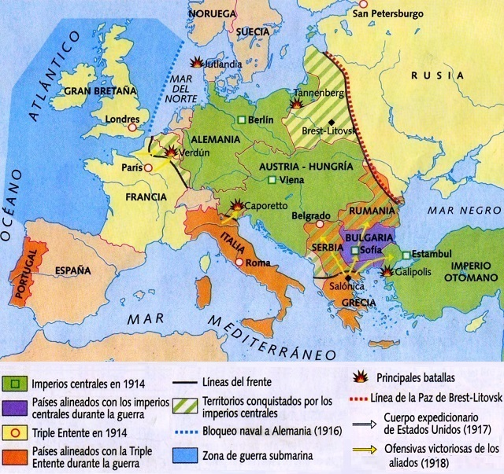
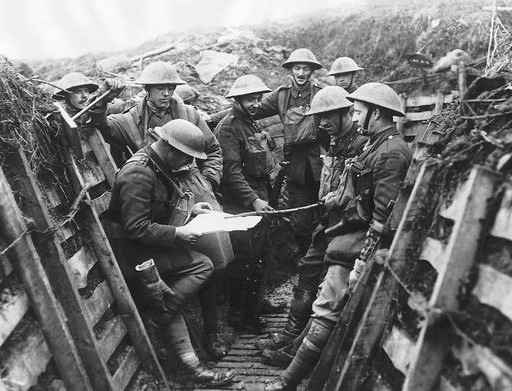
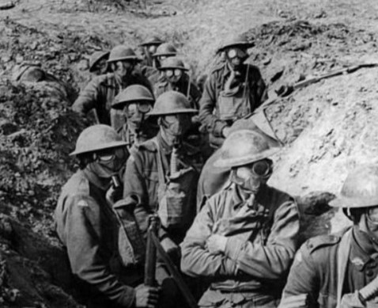
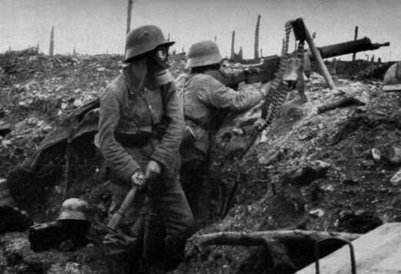
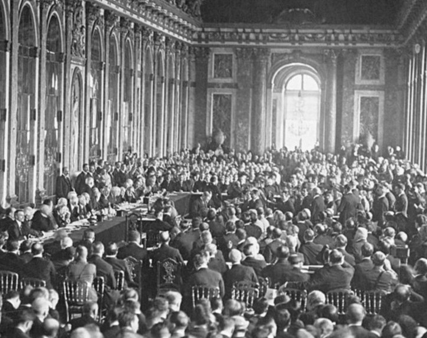
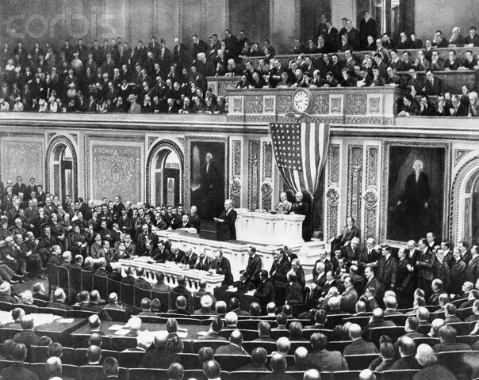

Anexos
"Mapa del Frente Occidental en 1917"
Ilustración del frente occidental que muestra las líneas de trincheras y las zonas de conflicto principales en Europa durante el año 1917.
"Soldados en las Trincheras"
  Fotografía en blanco y negro que muestra a soldados de ambos bandos en las trincheras, ilustrando las condiciones de vida en el frente.
"Tratado de Versalles"
Imagen escaneada de una página clave del Tratado de Versalles, que puso fin oficialmente a la Primera Guerra Mundial.
"Discurso del Presidente Woodrow Wilson"
Enlace a un video histórico que presenta un discurso del Presidente Woodrow Wilson sobre los Catorce Puntos y su visión para la paz después de la guerra.